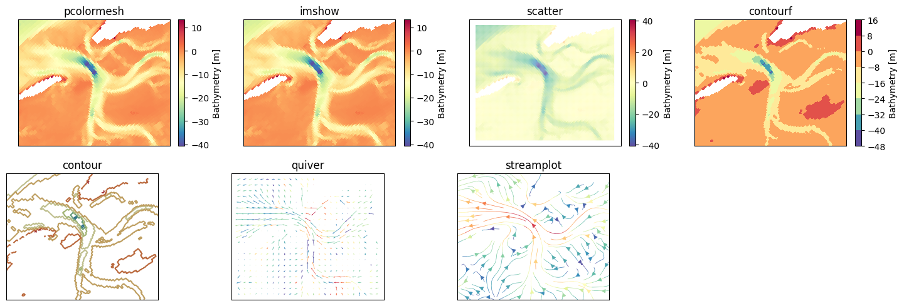
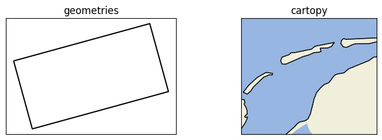
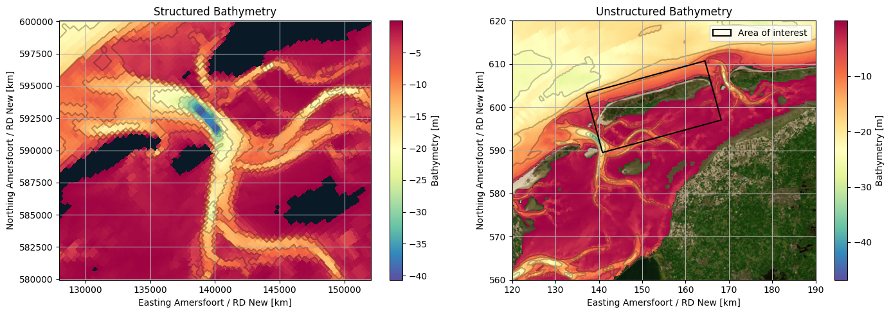
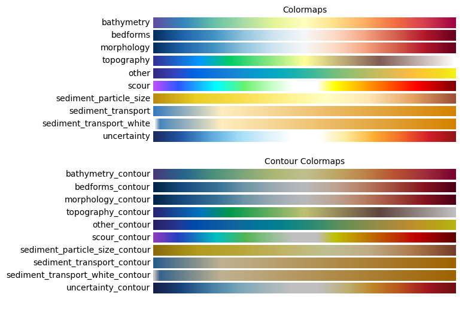
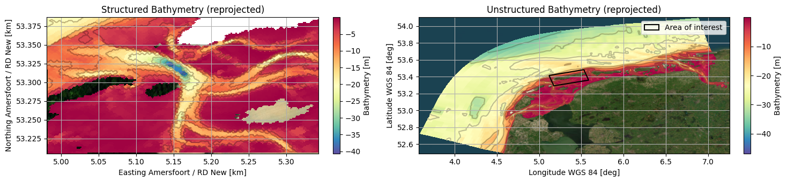
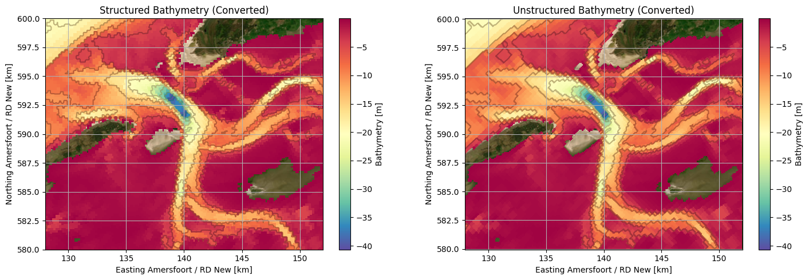

User Guide#
0. Packages#
[8]:
# Support Packages
import geopandas as gpd
import os
import rioxarray as rxr
import xarray as xr
import xugrid as xu
# Resilient Plotter Class
from resilientplotterclass import rpclass
1. Guidelines#
[9]:
# File path guidelines
file_path_gls = os.path.join(os.path.dirname(os.path.dirname(os.getcwd())), 'data', 'example_guidelines.json')
# Set guidelines
rpc = rpclass(file_path_gls, cartopy=True) # Cartopy explained in Section 7
# Set guidelines
rpc.set_guidelines(file_path_gls)
# Print guidelines
rpc.print_guidelines()
| title | date | author(s) | |
|---|---|---|---|
| Example guidelines | 2024-10-25 | ['Math van Soest', 'Ruben White'] |
| crs | vrl | xy_unit | bounds | cartopy_features | default_types | |
|---|---|---|---|---|---|---|
| EPSG:28992 | MSL | None | [110000, 560000, 190000, 620000] | ['land', 'ocean', 'lakes', 'rivers', 'coastline', 'borders', 'states'] | {'data_type': None, 'geom_type': None, 'map_type': None, 'extent_type': None} |
| pcolormesh | imshow | scatter | contourf | contour | quiver | streamplot | grid | geometries | basemap | cartopy | ||
|---|---|---|---|---|---|---|---|---|---|---|---|---|
| parameter | argument | |||||||||||
| data_type | bathymetry | D | D | D | D | D | D | D | ||||
| bedforms | D | D | D | D | D | D | D | |||||
| morphology | D | D | D | D | D | D | D | |||||
| flow_velocity | D | D | D | D | D | D | D | |||||
| flow_direction | D | D | D | D | D | D | D | |||||
| wave_height | D | D | D | D | D | D | D | |||||
| wave_period | D | D | D | D | D | D | D | |||||
| wave_direction | D | D | D | D | D | D | D | |||||
| sediment_transport | D | D | D | D | D | D | D | |||||
| sediment_concentration | D | D | D | D | D | D | D | |||||
| sediment_particle_size | D | D | D | D | D | D | D | |||||
| geom_type | geom | D | D | |||||||||
| aoi | P | P | ||||||||||
| grid | D | D | ||||||||||
| map_type | osm | D=P | ||||||||||
| satellite | D=P | |||||||||||
| extent_type | aoi | P | P | P | P | P | P | P | P | P | P | P |
| aoi_tight | P | P | P | P | P | P | P | P | P | P | P |
2. Load Data#
[10]:
# File paths
file_path_nc = r'p:\archivedprojects\11209197-virtualclimatelab\01_data\Delft3D\wadsea_0000_map.nc'
file_path_shp = r'p:\archivedprojects\11209197-virtualclimatelab\01_data\Extent\afmetingen_krappebox.shp'
# Read unstructured data
uds = xu.open_dataset(file_path_nc).isel(time=10, nSedSus=0, nSedTot=0, Two=0, max_nmesh2d_face_nodes=0).squeeze().drop('time')
# Set crs to unstructured data (IMPORTANT)
uds.grid.set_crs('EPSG:28992')
# Convert to structured data
bounds = (128000, 580000, 152000, 600000)
res = 100
ds = rpc.to_structured(uds[['mesh2d_mor_bl', 'mesh2d_ucx', 'mesh2d_ucy', 'mesh2d_ucmag']], resolution=res, bounds=bounds)
# Read geometry
gdf = gpd.read_file(file_path_shp)
3. General plot methods#
2.1 Structured data#
[4]:
# Create figure
fig, axs = rpc.subplots(2, 4, figsize=(15, 5), layout='tight')
axs = axs.flatten()
# Plot data
rpc.pcolormesh(ds['mor_bl'], data_type='bathymetry', ax=axs[0])
rpc.imshow( ds['mor_bl'], data_type='bathymetry', ax=axs[1])
rpc.scatter( ds, data_type='bathymetry', ax=axs[2], x='x', y='y', hue='mor_bl', s=0.5)
rpc.contourf( ds['mor_bl'], data_type='bathymetry', ax=axs[3])
rpc.contour( ds['mor_bl'], data_type='bathymetry', ax=axs[4])
rpc.quiver( ds, ax=axs[5], skip=10, x='x', y='y', u='ucx', v='ucy', hue='ucmag', cmap='Spectral_r', add_guide=False)
rpc.streamplot(ds, ax=axs[6], x='x', y='y', u='ucx', v='ucy', hue='ucmag', cmap='Spectral_r', linewidth=0.5, add_guide=False)
# Format figure
[ax.set_xlabel('') for ax in axs]
[ax.set_ylabel('') for ax in axs]
[ax.set_xticks([]) for ax in axs]
[ax.set_yticks([]) for ax in axs]
[ax.set_title(title) for ax, title in zip(axs, ['pcolormesh', 'imshow', 'scatter', 'contourf', 'contour', 'quiver', 'streamplot'])]
axs[7].remove()

2.2 Unstructured data#
[5]:
# Create figure
fig, axs = rpc.subplots(2, 4, figsize=(15, 5), layout='tight')
axs = axs.flatten()
# Plot data
rpc.pcolormesh(uds['mesh2d_mor_bl'], data_type='bathymetry', extent_type='aoi', ax=axs[0])
rpc.imshow( uds['mesh2d_mor_bl'], data_type='bathymetry', extent_type='aoi', ax=axs[1])
rpc.scatter( uds['mesh2d_mor_bl'], data_type='bathymetry', extent_type='aoi', ax=axs[2], s=0.5)
rpc.contourf( uds['mesh2d_mor_bl'], data_type='bathymetry', extent_type='aoi', ax=axs[3])
rpc.contour( uds['mesh2d_mor_bl'], data_type='bathymetry', extent_type='aoi', ax=axs[4])
rpc.quiver( uds, extent_type='aoi', ax=axs[5], x='mesh2d_face_x', y='mesh2d_face_y', u='mesh2d_ucx', v='mesh2d_ucy', hue='mesh2d_ucmag', cmap='Spectral_r', add_guide=False)
rpc.grid( uds, extent_type='aoi', ax=axs[6])
# Format figure
_ = [ax.set_xlabel('') for ax in axs]
_ = [ax.set_ylabel('') for ax in axs]
_ = [ax.set_xticks([]) for ax in axs]
_ = [ax.set_yticks([]) for ax in axs]
_ = [ax.set_title(title) for ax, title in zip(axs, ['pcolormesh', 'imshow', 'scatter', 'contourf', 'contour', 'quiver', 'grid'])]
axs[7].remove()

2.3 Geospatial data#
[6]:
# Create figure
fig, axs = rpc.subplots(1, 4, figsize=(15, 2.5), layout='tight')
axs = axs.flatten()
# Plot geometry
rpc.geometries(gdf, geom_type='aoi', ax=axs[0])
rpc.cartopy( extent_type='aoi', ax=axs[1])
# Format figure
_ = [ax.set_xlabel('') for ax in axs]
_ = [ax.set_ylabel('') for ax in axs]
_ = [ax.set_xticks([]) for ax in axs]
_ = [ax.set_yticks([]) for ax in axs]
_ = [ax.set_title(title) for ax, title in zip(axs, ['geometries', 'cartopy'])]
_ = [ax.remove() for ax in axs[2:]]

2.4 Basemaps#
[7]:
# Create figure
fig, axs = rpc.subplots(1, 4, figsize=(15, 2.5), layout='tight')
axs = axs.flatten()
# Plot geometry
rpc.basemap(extent_type='aoi', map_type='osm', ax=axs[0])
rpc.basemap(extent_type='aoi', map_type='satellite', ax=axs[1])
# Format figure
_ = [ax.set_xlabel('') for ax in axs]
_ = [ax.set_ylabel('') for ax in axs]
_ = [ax.set_xticks([]) for ax in axs]
_ = [ax.set_yticks([]) for ax in axs]
_ = [ax.set_title(title) for ax, title in zip(axs, ['Open Street Map', 'Satellite'])]
_ = [ax.remove() for ax in axs[2:]]

5. Combining general plot components#
[8]:
# Create figure
fig, axs = rpc.subplots(3, 2, figsize=(15, 15), layout='tight')
axs = axs.flatten()
# Plot data, geometry and basemaps
rpc.pcolormesh(ds['mor_bl'], data_type='bathymetry', ax=axs[0])
rpc.contour( ds['mor_bl'], data_type='bathymetry', ax=axs[0])
rpc.basemap( map_type='osm', ax=axs[0])
rpc.pcolormesh(uds['mesh2d_mor_bl'], data_type='bathymetry', ax=axs[1])
rpc.contour( uds['mesh2d_mor_bl'], data_type='bathymetry', ax=axs[1])
rpc.geometries(gdf, geom_type='aoi', ax=axs[1])
rpc.basemap( map_type='osm' , extent_type='aoi', ax=axs[1])
rpc.quiver( ds, ax=axs[2], skip=10, x='x', y='y', u='ucx', v='ucy', hue='ucmag', cmap='Spectral_r', add_guide=False)
rpc.cartopy( ax=axs[2])
rpc.quiver(uds.isel(nmesh2d_face=slice(None, None, 11)), ax=axs[3], x='mesh2d_face_x', y='mesh2d_face_y', u='mesh2d_ucx', v='mesh2d_ucy', hue='mesh2d_ucmag', cmap='Spectral_r', add_guide=False)
rpc.geometries(gdf, geom_type='aoi', ax=axs[3])
rpc.cartopy( extent_type='aoi', ax=axs[3])
rpc.streamplot(ds, ax=axs[4], x='x', y='y', u='ucx', v='ucy', hue='ucmag', cmap='Spectral_r', add_guide=False)
rpc.basemap( map_type='satellite', ax=axs[4])
rpc.grid( uds['mesh2d_mor_bl'], ax=axs[5])
rpc.basemap( map_type='satellite', extent_type='aoi', ax=axs[5])
rpc.geometries(gdf, geom_type='aoi', ax=axs[5])
# Format figure
_ = [ax.set_title(title) for ax, title in zip(axs, ['Structured Bathymetry', 'Unstructured Bathymetry', 'Structured Currents', 'Unstructured Currents', 'Structured Streamlines', 'Unstructured Grid'])]
_ = [ax.legend(loc='upper right') for ax in axs[[1, 3, 5]]]

6. Specific plot methods#
[9]:
# Create figure
fig, axs = rpc.subplots(1, 2, figsize=(15, 5), layout='tight')
# Plot data
rpc.bathymetry(ds['mor_bl'], data_type='bathymetry', ax=axs[0])
rpc.bathymetry(uds['mesh2d_mor_bl'], gdf=gdf, data_type='bathymetry', geom_type='aoi', extent_type='aoi', ax=axs[1])
# Format figure
_ = [ax.set_title(title) for ax, title in zip(axs, ['Structured Bathymetry', 'Unstructured Bathymetry'])]

7. Saving figures#
[10]:
# Create figure
fig, axs = rpc.subplots(1, 2, figsize=(15, 5), layout='tight')
# Plot data
rpc.bathymetry(ds['mor_bl'], data_type='bathymetry', ax=axs[0])
rpc.bathymetry(uds['mesh2d_mor_bl'], gdf=gdf, data_type='bathymetry', geom_type='aoi', extent_type='aoi', ax=axs[1])
# Format figure
_ = [ax.set_title(title) for ax, title in zip(axs, ['Structured Bathymetry', 'Unstructured Bathymetry'])]
# Save figure
rpc.savefig(fig, 'example.png')
# Remove figure
os.remove('example.png')

8. Interactive figures#
[11]:
# TODO
9. Supporting Methods#
9.1 Cartopy#
[12]:
# Set cartopy
rpc.set_cartopy()
# Get cartopy
gdf_cartopy = rpc.get_cartopy()
# Print cartopy
gdf_cartopy
[12]:
| geometry | kwargs | |
|---|---|---|
| land | MULTIPOLYGON (((111099.184 552628.006, 111884.... | {'facecolor': [0.9375, 0.9375, 0.859375], 'edg... |
| ocean | MULTIPOLYGON (((194478.348 602358.927, 190035.... | {'facecolor': [0.59375, 0.71484375, 0.8828125]... |
| lakes | MULTIPOLYGON (((137659.655 552589.199, 148334.... | {'facecolor': [0.59375, 0.71484375, 0.8828125]... |
| coastline | MULTILINESTRING ((110953.29 551991.251, 111099... | {'color': 'black', 'linewidth': 1, 'linestyle'... |
| states | MULTIPOLYGON (((111099.184 552628.006, 111884.... | {'facecolor': 'none', 'edgecolor': 'black', 'l... |
9.2 Custom colormaps#
[13]:
# Custom colormaps
rpc.plot_colormaps()

9.3 Reprojecting data#
[14]:
# Reprojecting data
ds_reprojected = rpc.reproject(ds, crs='EPSG:4326')
uds_reprojected = rpc.reproject(uds, crs='EPSG:4326')
gdf_reprojected = rpc.reproject(gdf, crs='EPSG:4326')
# Create figure
fig, axs = rpc.subplots(1, 2, figsize=(15, 3.5), layout='tight')
# Plot data
rpc.bathymetry(ds_reprojected['mor_bl'], data_type='bathymetry', ax=axs[0])
rpc.bathymetry(uds_reprojected['mesh2d_mor_bl'], gdf=gdf_reprojected, data_type='bathymetry', geom_type='aoi', ax=axs[1])
# Format figure
_ = [ax.set_title(title) for ax, title in zip(axs, ['Structured Bathymetry (reprojected)', 'Unstructured Bathymetry (reprojected)'])]
c:\Users\white_rn\AppData\Local\miniforge3\envs\rpc_env\Lib\site-packages\joblib\memory.py:577: UserWarning: Persisting input arguments took 3.32s to run.If this happens often in your code, it can cause performance problems (results will be correct in all cases). The reason for this is probably some large input arguments for a wrapped function.
return self._cached_call(args, kwargs, shelving=False)[0]

7.4 Converting data#
[15]:
# Converting data
da_converted = rpc.to_structured(uds['mesh2d_mor_bl'], resolution=res, bounds=bounds)
uda_converted = rpc.to_unstructured(ds['mor_bl'])
# Create figure
fig, axs = rpc.subplots(1, 2, figsize=(15, 5), layout='tight')
# Plot data
rpc.bathymetry(da_converted, data_type='bathymetry', ax=axs[0])
rpc.bathymetry(uda_converted, data_type='bathymetry', ax=axs[1])
# Format figure
_ = [ax.set_title(title) for ax, title in zip(axs, ['Structured Bathymetry (Converted)', 'Unstructured Bathymetry (Converted)'])]
